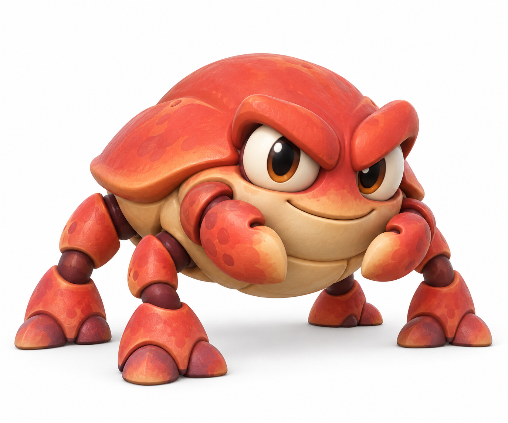
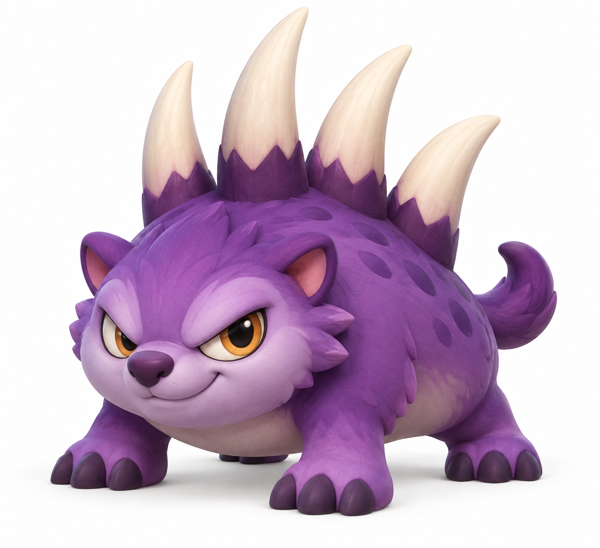
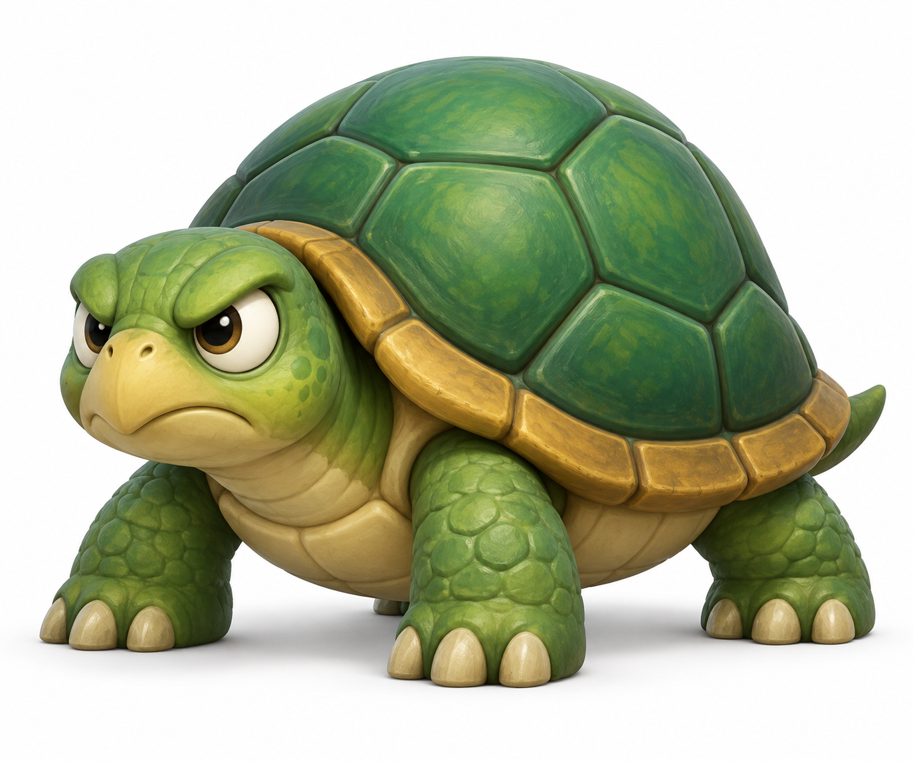
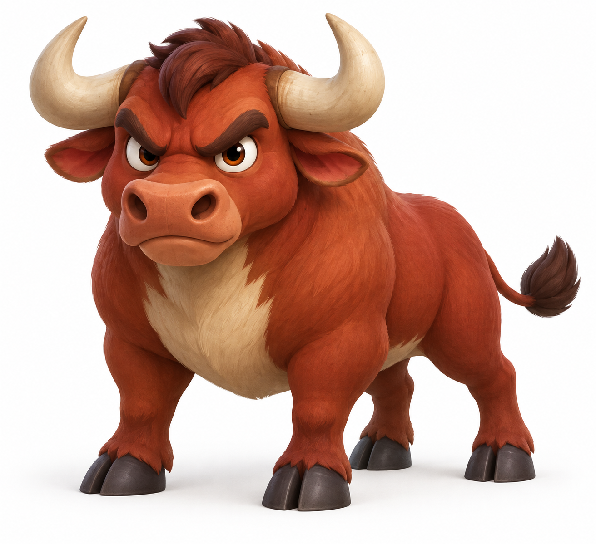
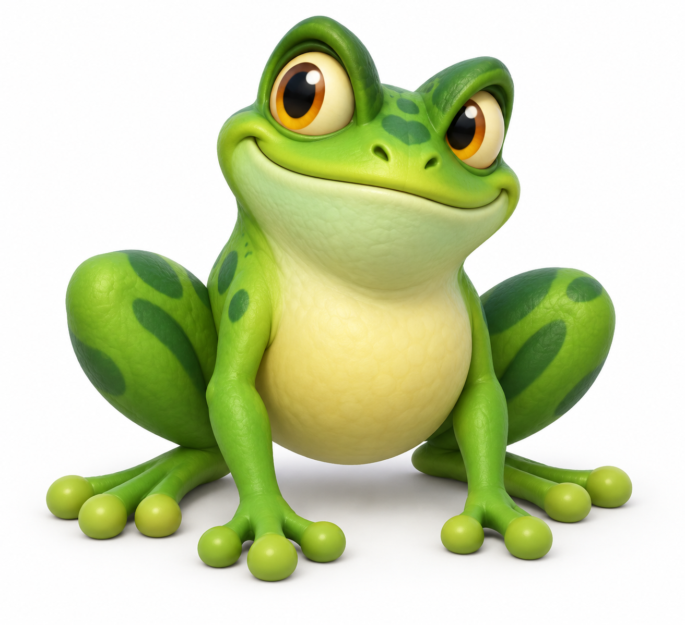
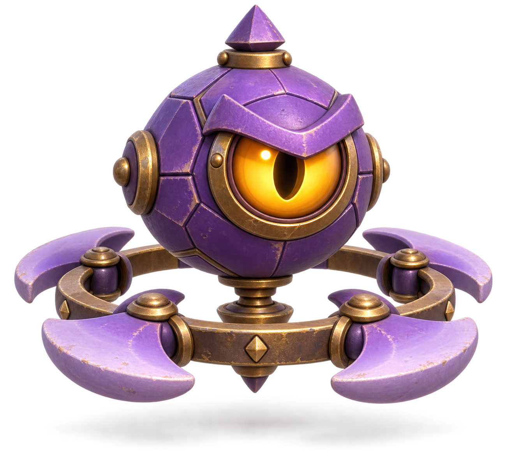
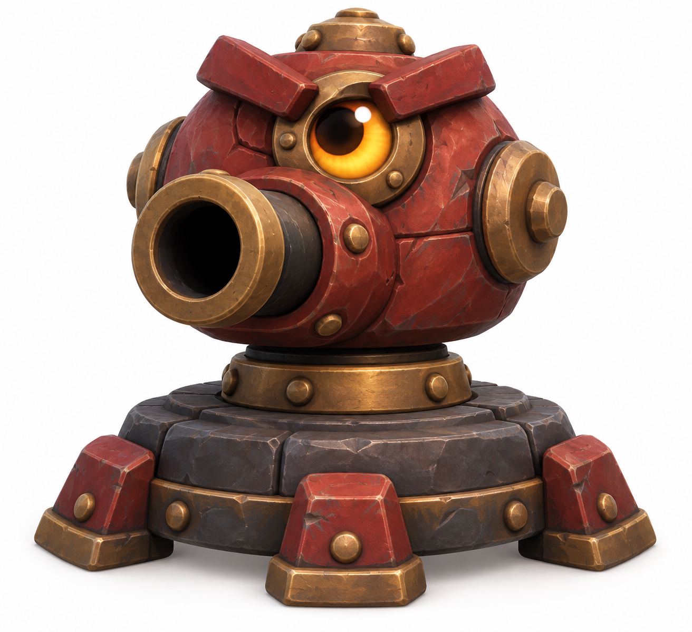
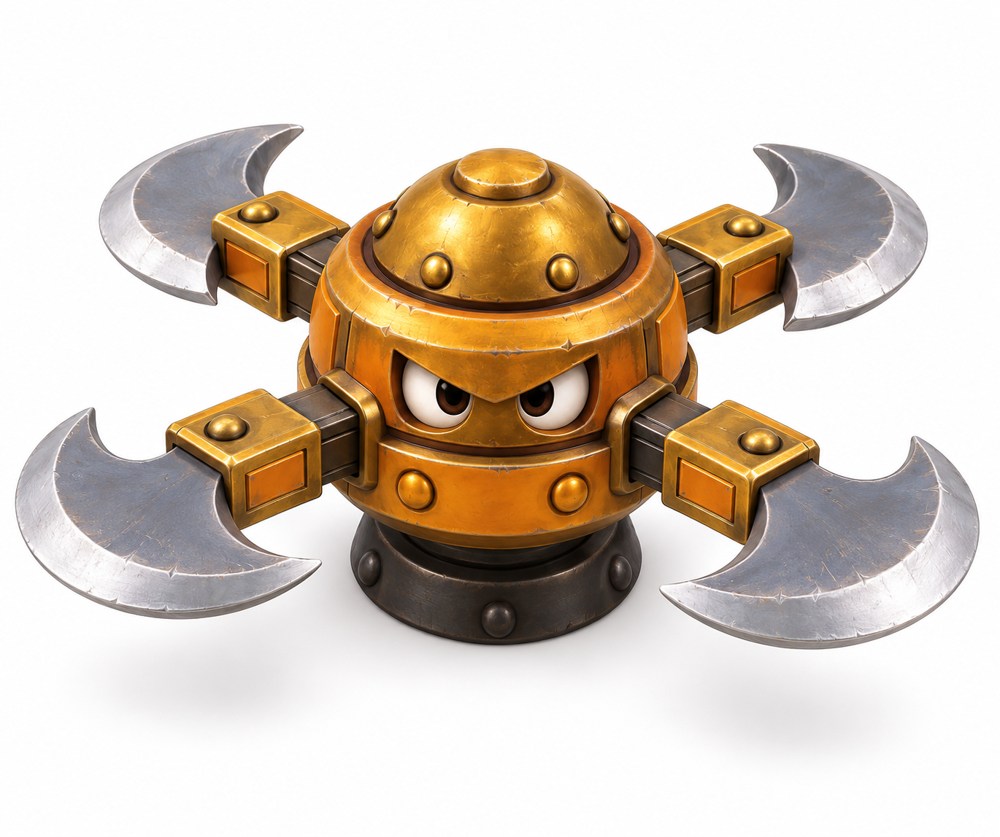

Enemy roster · design reviewEnemy roster
Eight original designs for the platformer.
All eight Meshy models and animation rigs integrated and reviewed.

Coral Crabgrunt

Bristlebackspiker

Mossbackturtle

Russet Bullcharger

Spring Froghopper

Violet Watcherfloater

Ember Sentrysentry

Brass Whirlerspinner